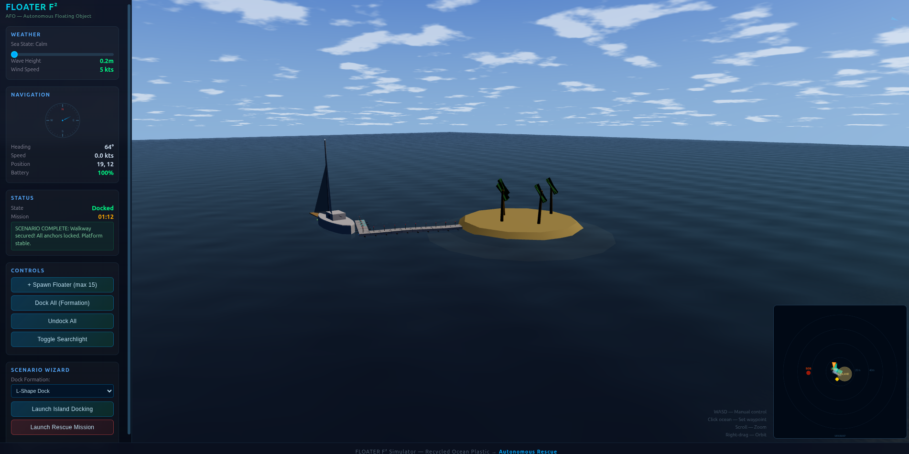
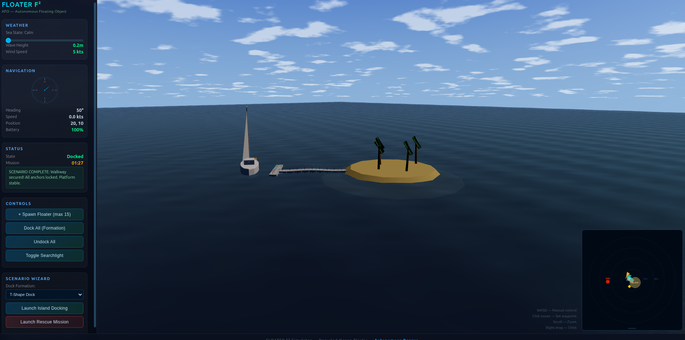
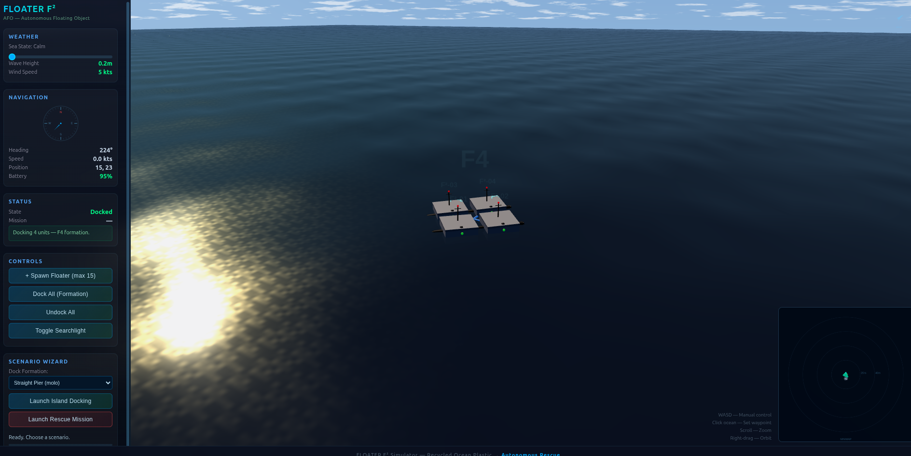
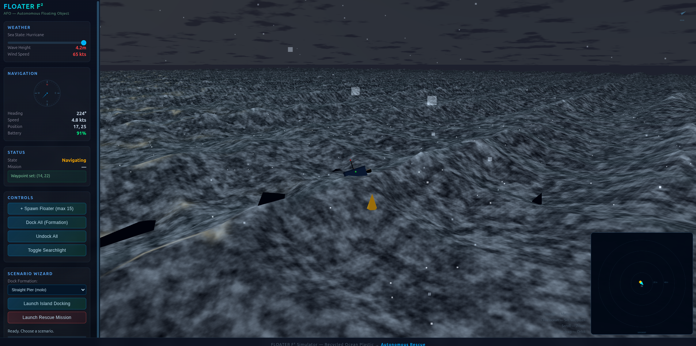

FLOATER F²
Floating plastic is the problem. Floating plastic is the plan B.
Ocean waste recycled into autonomous rescue platforms.
1m x 1m x 45cm
2x Sealife-Safe Thrusters
AI Pattern Recognition
Dockable

Floating plastic is the problem. Floating plastic is the plan B.
Ocean waste recycled into autonomous rescue platforms.
AI pattern recognition assesses conditions. The nearest Floater gets the call. Even through a hurricane — it was built for this.
RadioMicroscope locks onto PLB/AIS/VHF signal. AI calculates optimal route through storm.
Hurricane-rated hull punches through heavy seas. Low center of gravity, sealed electronics bay. It can take it.
Searchlight activates. Gatewood Cape deploys — 360° shelter in seconds. Inflatable pad provides thermal insulation.
Sheltered, insulated, located. Floater relays GPS and maintains position until rescue arrives.
2-DOF pan-tilt antenna tracker. ESP32S3 with directional WiFi antenna and MPU-6050 IMU. Scans, maps, and locks onto signals.
Camera + thermal + radar fusion. Obstacle avoidance, survivor detection by thermal signature, sea state assessment, marine life detection for thruster safety.
Li-ion primary battery. Body-integrated solar panels (cargo version). Experimental: ocean plastic energy recovery, wave energy harvester with deployable anchor.
Two side-mounted thrusters with marine life protection systems. AI-driven speed limiting near detected animals. Shrouded intakes under research.
Six Moon Designs ultralight poncho-shelter. 310g, 35 sq ft coverage, 1800mm waterproof rating. 360° protection from elements. Quick-deploy from sealed compartment.
Nemo Tensor class ultralight. 245g, R-value 2.4, packs to 27x10cm. Thermal insulation barrier between survivor and cold water.
Front and back docking ports let Floaters link into trains for cargo transport or combine into larger platforms. The F5 formation creates a 5m² stable platform from 5 units.
Docking enables mechanical coupling, shared power bus, and coordinated navigation. A train of cargo Floaters moves supplies autonomously across open water.
| Parameter | Value |
|---|---|
| Dimensions | 1m x 1m x 45cm |
| Propulsion | 2x side-mounted thrusters (sealife-safe) |
| Primary Power | Li-ion battery pack |
| Secondary Power | Body-integrated solar panels |
| Navigation | GPS + compass + AI pattern recognition |
| Signal Tracking | RadioMicroscope (ESP32S3, 2-DOF, directional antenna) |
| Communication | WiFi / LoRa / satellite (planned) |
| Rescue Payload | Gatewood Cape (310g) + inflatable pad (245g) = 555g total |
| Docking | Front + back ports, mechanical + electrical + data |
| Weather Rating | Hurricane-rated (target) |
| AI Sensors | Camera (visible + thermal) + radar |
| Experimental | Plastic-to-energy, wave harvester, deployable anchor |
First physical prototype with real components. Foam hull, working electronics, actual thruster motor, live RadioMicroscope antennas.


Full 3D ocean simulator. Gerstner waves, weather control, rescue missions, island docking, swarm formations. All in your browser. No install.




6-component ocean surface with multi-layer foam, spray, and rain. Calm to hurricane.
15-unit fleet forms pier from shore to sailboat. Spiral anchors drill into sand. 5 dock formation types with live reconfiguration.
AI dispatches nearest unit. Camera follows. Gatewood Cape deploys. Pad inflates. Searchlight beam visible.
Collect floating ocean plastic. Burn it for supplemental power. Needs R&D on emissions filtration. Cleans the ocean while it works.
Deployable anchor for station-keeping in solar-rich waters. Wave energy generator harvests power while parked. Indefinite endurance.
Each Floater as a mesh node. RadioMicroscopes relay signals across ocean. Distributed comms infrastructure that moves with the mission.
FLOATER F² is being built right now. Open source hardware. Real prototype. Looking for collaborators, engineers, and believers.
View on GitHub